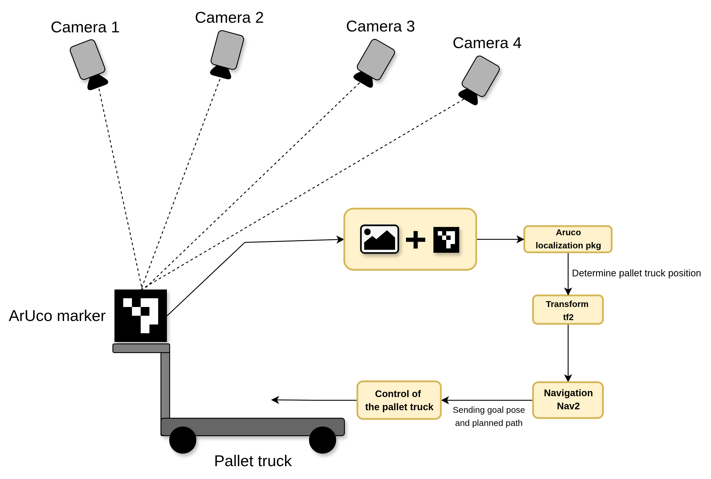
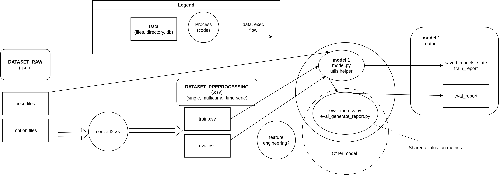
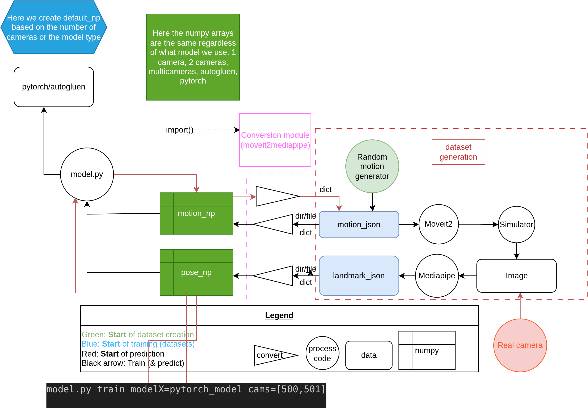
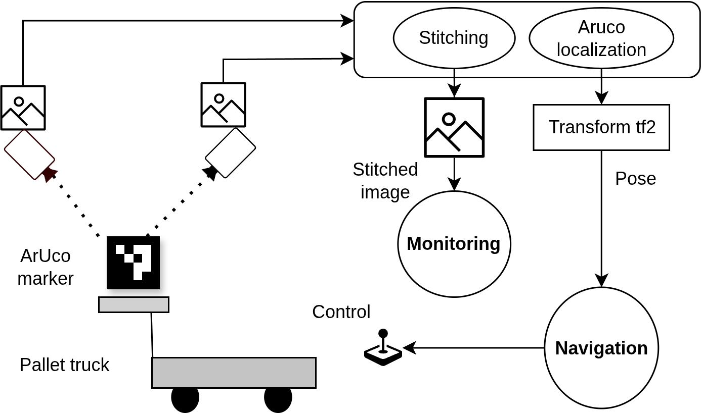

SIMLAN, Simulation for Multi-Camera Robotics
SIMLAN, Simulation for Multi-Camera Robotics
Dependencies
Contributing
Config Generation
Simulation
Overview
SIMLAN Bringup
GPSS cameras
Camera Bird Eye View
Aruco Localization
Failsafe
Bringup
Pallet Truck
URDF
Control
Navigation
Overview
Humanoid Moveit
Overview
Pose to Motion AutoGluon model
Panda MoveIt2
Gazebo Worlds
Overview
Object Modeling
Warehouse Specification
Object Mover
Credits
Appendix
Changelog
Diagrams
SIMLAN, Simulation for Multi-Camera Robotics
Appendix
Diagrams
Edit on infotiv-research/SIMLAN
high-level_diagram_SIMLAN.drawio

Humanoid_mocap_flow.drawio

humanoid_mocap_pipeline.drawio

launch_bringup.drawio
SIMLAN_DIAGRAM.drawio

« Previous